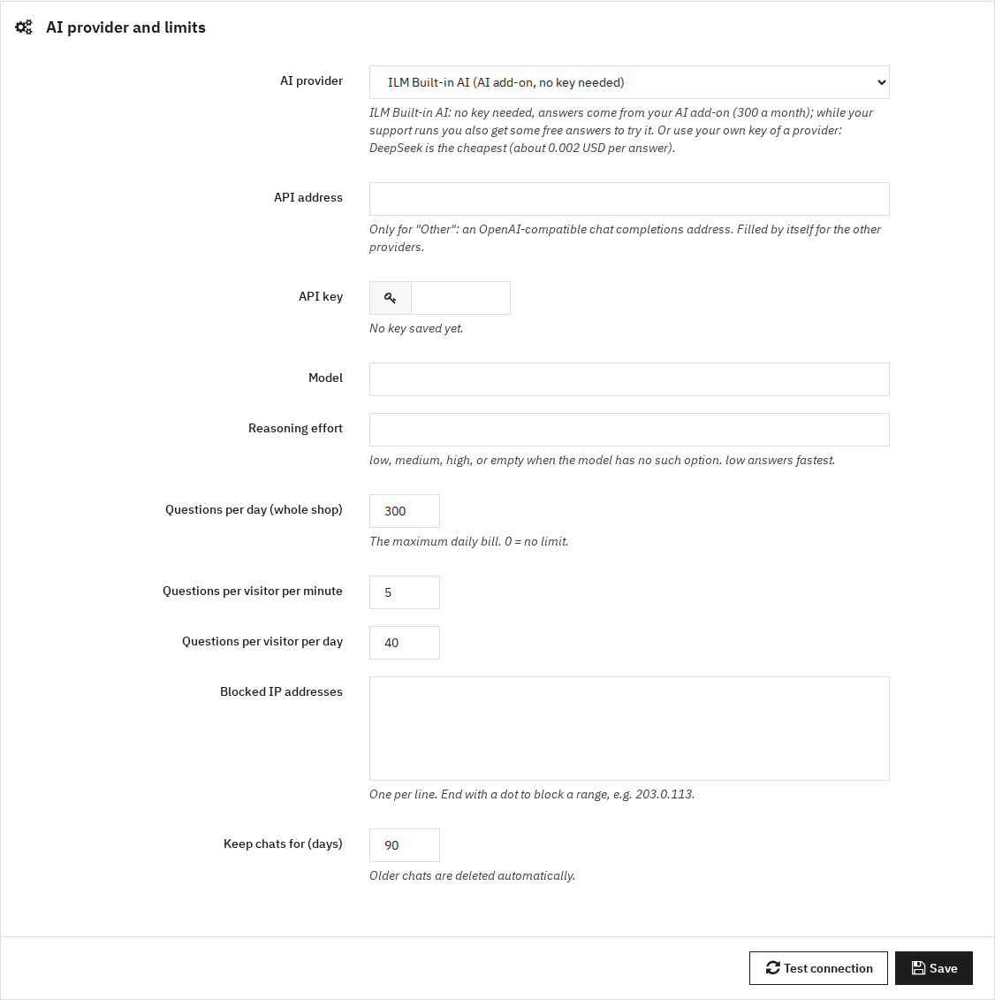

AI provider
The section AI provider and limits decides who writes the answers.

2.1 ILM Built-in AI
Choose ILM Built-in AI (AI add-on, no key needed). You need no account and no key of an AI company.
- With the AI add-on you choose Starter (1,000 chat answers a month, $5 a month) or Pro (5,000 chat answers a month, $15 a month or $144 a year). A monthly plan runs for one month: buy the next month when you need it; we e-mail you 5 days before it ends. Buy it with the module or later on the module's page or your order page.
- While your support runs (support add-on), you get 100 free answers once to try the chat.
- The status panel shows your plan, the answers left and the date new answers start.
- When no answers are left, shoppers see your contact options instead of an answer.
- With the built-in AI, the suggested questions of a page are not answered in advance, because every answer counts on your plan.
2.2 Your own AI key
Choose DeepSeek, OpenAI, Google Gemini, Anthropic Claude or Other (OpenAI-compatible), paste your API key and click Save. You pay the provider directly; with DeepSeek an answer costs about 0.001 USD.
- API address is filled in by itself. Type one only for Other.
- Model is filled in with the provider's default; you can type another model name.
- Reasoning effort: low, medium, high, or empty when the model has no such option. low answers fastest.
- A saved key is never shown again. Leave the field empty to keep it.
2.3 Test connection
Click Test connection after saving. With your own key, a short question is sent and the time of the answer is shown, or the provider's error message. With the built-in AI, the test asks for your plan and uses no answer.
2.4 Limits
- Questions per day (whole shop): with your own key, the most questions answered in a day (your maximum daily bill). 0 = no limit. With the ILM Built-in AI it is not used: your plan counts the answers.
- Questions per visitor per minute and per day: stop one visitor (or a bot) from using up your answers.
- Blocked IP addresses: one per line; end with a dot to block a range, e.g.
203.0.113.
- Keep chats for (days): older chats are deleted automatically.